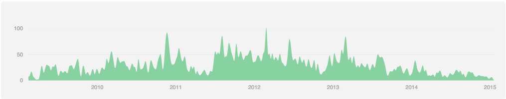
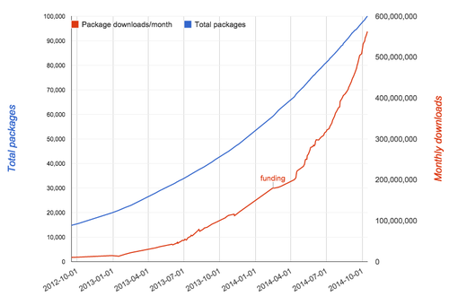

Disclaimer
- The following opinions are my own
- Lots of history / side conversations behind iojs
- Would love corrections/edits via GitHub
Node.js Background
- Originally created by Ryan Dahl
- Trademark and copywrite purchased by Joyent in 2010
- Open Source under MIT License
- Project led by Benevolent Dictator for Live (BDFL), currently TJ Fontaine of Joyent
- Even numbered releases are "stable"
Node.js Release History
- Node v0.6.0 - Novemebr 5th, 2011
- Node v0.8.0 - June 25th, 2012
- Node v0.10.0 - March 11th, 2013
- Node v0.12.0 - "In two weeks" (since early 2014)
Node Core Contributions

NPM Package Count

Community frustration
- Slow and unpredictable release cycles
- Outdated dependancies (V8, libuv, others)
- Difficult to contribute to core
- Lack of transparency
- Limited community involvment in project direction
Node Forward
- Started in July 2014
- Brain child of Mikeal Rogers
- "Broad community effort to improve Node, JavaScript, and their ecosystem through open collaboration"
- Formed Technical Committee (TC) of many of Node core commiters
- TC meetings recorded via Google Hangouts
Node.js Advisory Board
- Joyent's new CEO, Scott Hammond, recognizes community frustration
- Forms Node.js Advisory Board to open dialog
- Announced on October 23rd 2014, but process started in September 2014
- AB members overlap with TC
Timeline of iojs
- July 11, 2014: Mikeal Rogers creates private node-forward repository
- Early August 2014: Joyent's new CEO, Scott Hammond, reaches out to Node community leaders re: direction of Node.js
- August 2014: node-forward GitHub organization formed, including "fork" of joyent/node
- October 9, 2014: node-forward/node conflicts with Node.js trademark, repo made private
- November 26th, 2014: Fedor Induty (long-time Node.js core contributor, active node-forward participant) creates iojs org, TC moves dev there
Does iojs compete with Joyent or Node.js?
- No, (not really)
- Opportunity for Node core team to rapidly improve Node.
- Goal is to eventually merge iojs back to Node
Steps to merge iojs into Node.js
- Fix governence
- Create a foundation
- Improve release process
- Profit!
So what's new with iojs? (1/2)
- Major V8 upgrade
- 3.14.5.9 in Node v0.10.35
- 3.26.33 in Node v0.11.14
- 3.31.74.9 in iojs v1.0.0
- 4.1 in iojs v1.0.3 (not breaking change)
- V8 upgrade brings lots of fixes and perf improvements
- V8 version now in line with Chrome (helpful for NW.js)
- Support for ES6 features w/o --harmony flag
- Changelog from v0.10.35
So what's new with iojs? (2/2)
- updated npm:latest (curently 2.1.18)
- openssl 1.0.1k
- Streams3
- execSync child_process
- Cluster round-robin
- Crypto performance improvements
- For deep-dive, check out @trevnorris talk at NodeDay
There's no such thing as a free lunch
iojs has technical issues
Getting Started with iojs
tldr;
- iojs is a community fork of Joyent's Node.js
- Focused on improving pace of technological improvements
- Will likely merge with Node.js if governence issues resolved
- This is healthy and necessary for the Node ecosystem
- Strap yourself in: things might be bumpy for a while
- Keep your prod systems running Node.js for now
Thanks!
Ross Kukulinski
kukulinski.com | @rosskukulinski